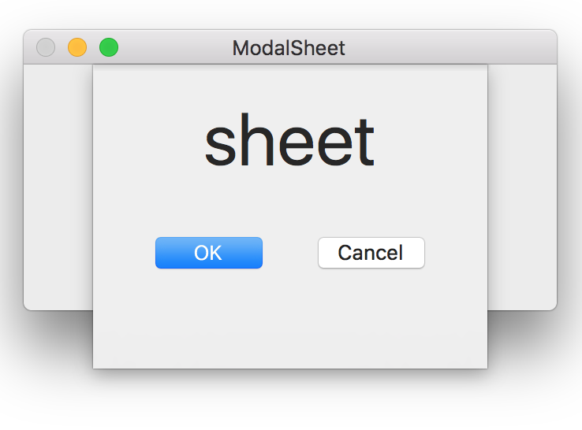
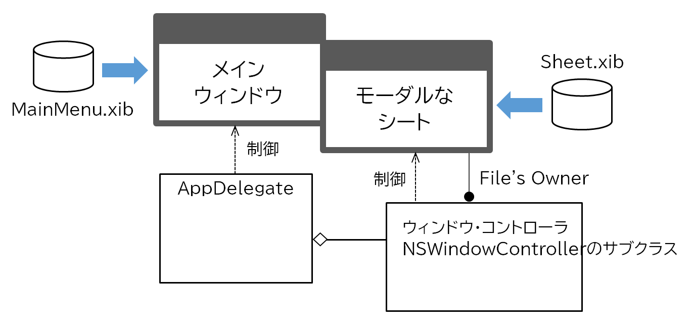
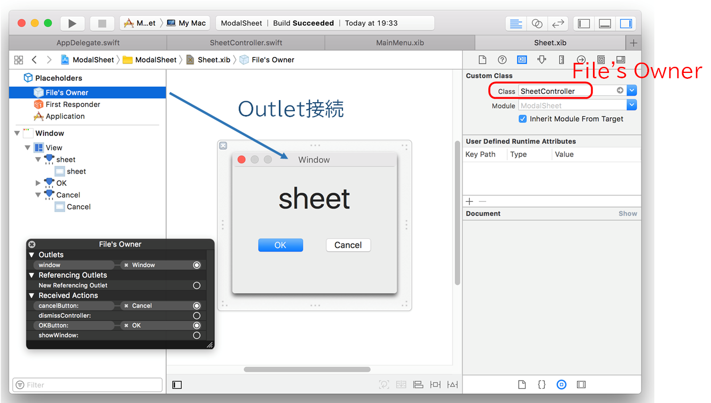
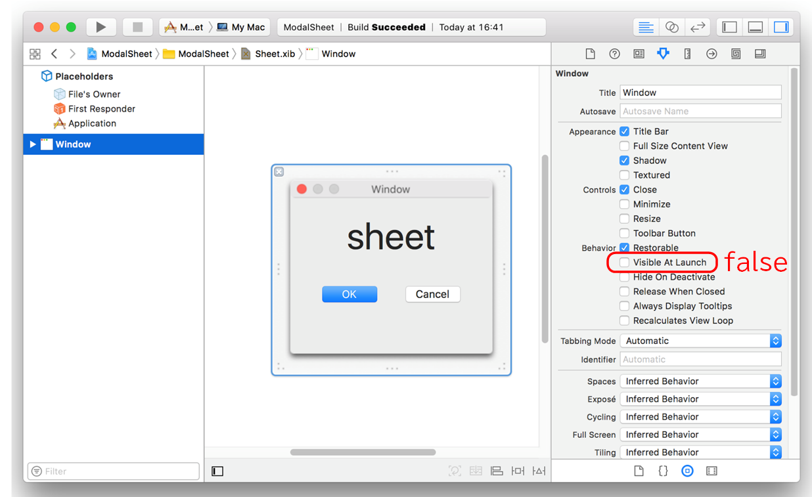
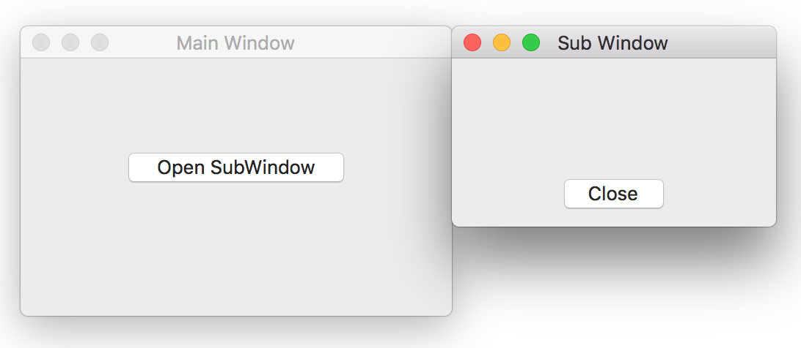
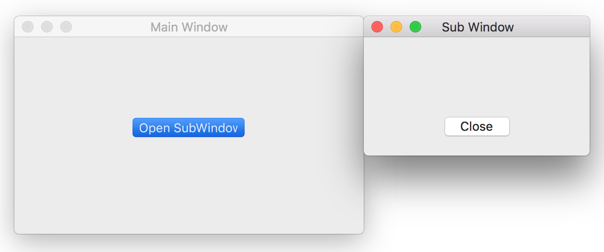

メインウィンドウからサブウィンドウを開く
モーダルなシートを表示する
画像をクリックすると動画が表示されます。

実装方法
AppDelegate
ウィンドウコントローラ・オブジェクトを作成し保持する。UIイベントによりモーダルなシートを表示する。シートが閉じられた時に実行されるコールバック処理を記述できる。
ウィンドウコントローラ
（以下のインタフェースビルダの設定は、全ての処理に対して共通）
ウィンドウコントローラとxibファイルのシートオブジェクトを接続する。

ウィンドウの Visible At launchの設定を外すこと。

xibファイルからウィンドウ・オブジェクト（シート）をロードするには、以下のコードのように windowNibNameプロパティのゲッターをオーバーライドしxibファイル名を返し、イニシャライザを実行する。奇妙なコードだが、これがお決まり。
また、UIイベントによりシートを閉じる。
モードレスなサブウィンドウを表示する
画像をクリックすると動画が表示されます。

ウィンドウコントローラを作成して、showWindowメソッドによりウィンドウを開く。ウィンドウを閉じるときは、サブウィンドウコントローラでcloseメソッドを実行する。モードレスなので、それぞれのウィンドウをマウスのクリックなどでアクティブにすることができる。
AppDelegate
ウィンドウコントローラ
モーダルなサブウィンドウを表示する
画像をクリックすると動画が表示されます。

NSAppオブジェクトのrunModal(for:)メソッドによりモーダルなサブウィンドウを開く。これによりイベントループ制御はサブウィンドウ側に移り、メインウィンドウはサブウィンドウが閉じるまでアクティブになることはできない。サブウィンドウを閉じるとき、呼び出し側にModalResponse型の戻り値を返すことができる。
サブウィンドウの表示位置の変更を反映させるために ウィンドウコントローラの showWindowメソッドを実行する。